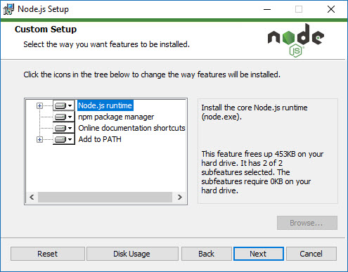

|
Node.JS
|
 |
Introduction to Node.JS
- Node.JS is the Backend server solution running JavaScript
- Node.JS is working in the server side:
- Receiving requests from the FrontEnd (the web interface)
- Sending answers to the FrontEnd
- Node.JS has a package manager called NPM
- Packages can be installed to the server for additional abilities
- Node.JS has a huge community, constantly developing more solutions
- Node.JS server can be installed on any operating system and completely portable
- Node.JS is written in JavaScript, compiled with C and running from the Terminal/Console
Node.JS Installation
- Go to office Node.JS website at https://nodejs.org
- download the latest version of the package to you operating system
- Run the installation wizard and follow the instruction
- The installer is straight-forward, in the custom setup windows, just make shure everything is selected

- when the wizard ends, click the 'Finish" button
To verify successful installation:
- Open Terminal / command prompt on your computer
- Type in:
node -v
op
node --version
if you get a response from the server ode.JS server, like:
V10.15.3
it means everything is working!
back to main page